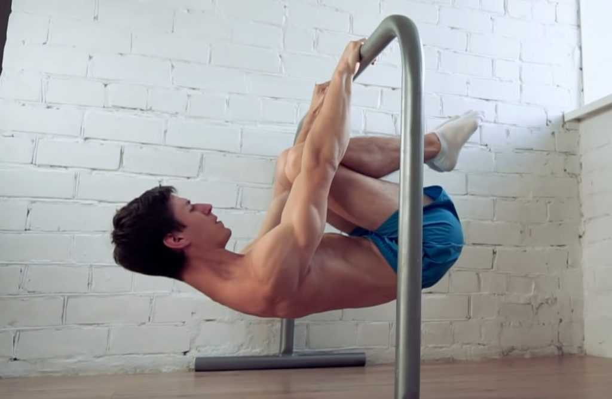
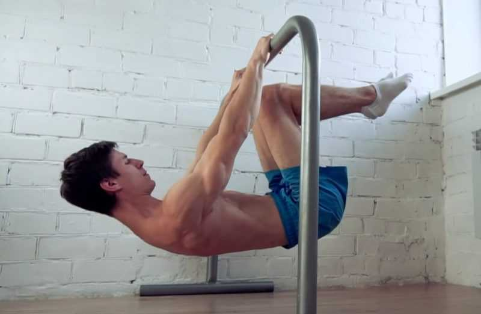
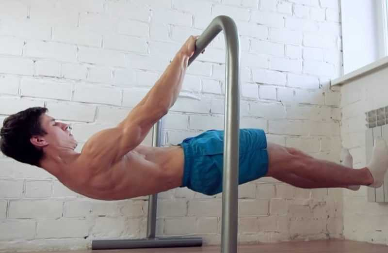
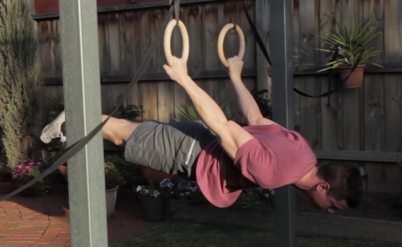

Estas progresion se llama TUCK FRONT LEVER. Una progresión muy básica pero que te ayudará a familiarizarte con el ejercicio y la técnica. Debes llevar las rodillas al pecho tal y como ves en la imagen. Asegúrate de bloquear bien los brazos, que estén estirados. Es importante controlar la postura desde el primer momento para no adquirir malos hábitos.
Estas progresion se llama ADVANCED TUCK FRONT LEVER. Esta progresión se puede entender de dos formas. Una sería muy parecida la posición en «L» comentada anteriormente, por lo que no la volveré a enseñar. La segunda sería la que veis en la imagen, con los muslos ligeramente llevados hacia adelante. Aquí se complican las cosas.
Estas progresion se llama FULL FRONT LEVER. Posición final del elemento front lever. Ambas piernas deben estar juntas, alineadas con el cuerpo. Mantén las puntas de los pies estiradas. Recuerda mantener los codos bloqueado; no estirar los brazos facilita bastante el front lever.
Back Lever
Estas progresion se llama TUCK BACK LEVER. Es la posición inicial del back lever. Pese a que no suele suponer mucho problema, es importante practicarla para comenzar a entender la postura de este movimiento. Si se te complica, es posible que tengas los hombros muy rígidos; si ese es el caso, trabaja primero movilidad y flexibilidad y vuelve a intentarlo. Antes de pasar a la siguiente, se recomienda tener mucha soltura en la tucked, siendo capaz de aguantarla entorno a 40 segundos.

Estas progresion se llama ADVANCED TUCK BACK LEVER. Esta segunda progresión añade un plus de dificultad notable al movimiento. Para lograrla, deberás separar las rodillas del pecho, donde las tenías recogidas anteriormente en la tucked. De esta forma, conseguirás un ángulo 90º entre tus piernas y tu tronco. Esta posición será clave para ganar mucha fuerza y comenzar a pensar en las progresiones más avanzadas. Consigue almenos 30 segundos antes de probar la straddle position. Como la straddle es bastante más difícil que la tucked advanced, he añadido una progresión extra, que sería igual a la tucked advanced pero abriendo un poco las piernas.

Estas progresion se llama FULL BACK LEVER. La posición final de este elemento. Como puedes apreciar en la imagen, debes estar paralelo al suelo y respetando la técnica en todo momento.
